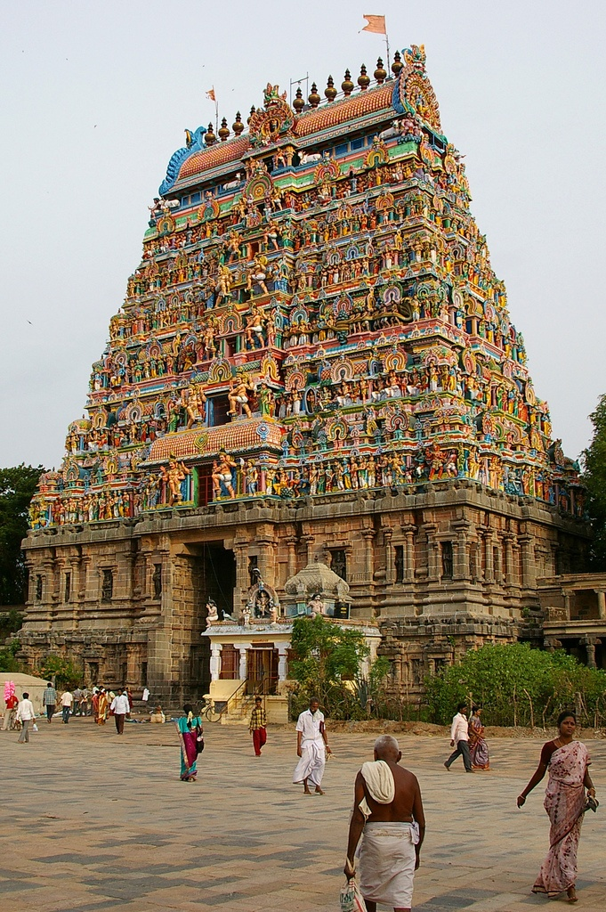

Meenakshi Amman Temple
Madurai-The City of Nectar
Overview
Meenakshi Amman Temple, located in the heart of Madurai, is one of the most revered and ancient temples of India. Dedicated to Goddess Meenakshi, an incarnation of Parvati, and Lord Sundareswarar, a form of Lord Shiva, the temple stands as a symbol of divine love, power, and cosmic balance. The temple complex is famous for its towering gopurams, intricate sculptures, vibrant murals, and spiritual atmosphere that attracts millions of devotees and tourists every year from across the world.
Sthala Purana
According to the Sthala Purana, Goddess Meenakshi was born to the Pandya king Malayadwaja with three breasts, signifying her extraordinary divine nature. It was prophesied that the third breast would vanish when she met her destined consort. When Meenakshi encountered Lord Sundareswarar, the third breast disappeared, symbolizing their divine union. This sacred event is celebrated annually as the Chithirai Thiruvizha, reenacting the celestial wedding of the Goddess and Lord Shiva.
Moolavar
The presiding deities of the temple are Goddess Meenakshi, depicted as a powerful yet compassionate mother goddess, and Lord Sundareswarar, the supreme form of Lord Shiva. Goddess Meenakshi is worshipped as the protector of Madurai and its people, while Lord Sundareswarar represents wisdom and cosmic order. Their sanctums are architectural marvels, radiating immense spiritual energy.
Temple Timings
The temple remains open daily for devotees to seek blessings during
various poojas and rituals conducted throughout the day. Morning
darshan begins at 5:00 AM and continues until 12:30 PM, followed by
evening darshan from 4:00 PM to 10:00 PM. These timings may vary on
festival days and special occasions, when the temple remains open
for extended hours.
Morning: 5:00 AM – 12:30 PM
Evening: 4:00 PM – 10:00 PM
Festivals
Meenakshi Amman Temple is renowned for its grand festivals, the most significant being the Chithirai Thiruvizha, which celebrates the divine marriage of Goddess Meenakshi and Lord Sundareswarar. Other major festivals include Navaratri, Aavani Moola Utsavam, Float Festival, and Theppotsavam. During these festivals, the temple and the city of Madurai come alive with devotion, music, and vibrant processions.
History
The Meenakshi Amman Temple has a rich historical legacy that dates back over two thousand years. The temple flourished under the rule of the Pandya dynasty, who considered Goddess Meenakshi as their royal deity. Several inscriptions found within the temple complex reveal contributions from various rulers, including the Nayaks, who expanded the structure into its present magnificent form during the 16th century.
The Nayak rulers, especially King Tirumalai Nayak, played a crucial role in enhancing the architectural grandeur of the temple by adding spacious corridors, ornate mandapams, and towering gopurams. Over the centuries, the temple has survived invasions, restorations, and renovations, emerging as a timeless symbol of Dravidian architecture and spiritual heritage.
Temple Gallery



Darshan & Special Poojas
The temple offers multiple darshan options including free darshan and special paid darshan for devotees seeking quicker access. Special poojas such as Abhishekam, Archana, and Alankaram can be performed for the deities on auspicious days. Tickets for special darshan and poojas can be obtained at the temple counters and through authorized channels.
Official Information & Contact
For official updates, darshan details, and announcements, devotees may visit the official website of the Meenakshi Amman Temple.
🌐 Official Website:
https://maduraimeenakshi.hrce.tn.gov.in
📞 Temple Contact:
+91 452 234 4360
📧 Email:
www.maduraimeenakshi.org
Temple Location
Meenakshi Amman Temple is located in the heart of Madurai, Tamil Nadu, and is easily accessible by road, rail, and air.
📍 Get Directions to Temple